network geography
hello wireless!
Wireless History
Information and Packets
Snoopin
James Clerk Maxwell proved mathematically that electromagnetic waves should exist.
Heinrich Hertz was the first to generate them
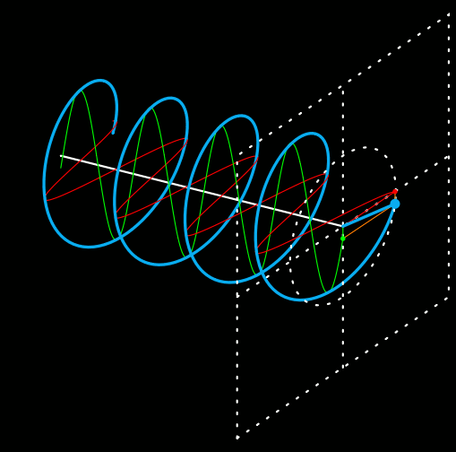
In the 1880s Hertz demostrated how to produce these waves by using a spark gap
But their transmission power was limited.
In the early 1890s Guglielmo Marconi developed the first wireless telegraph system
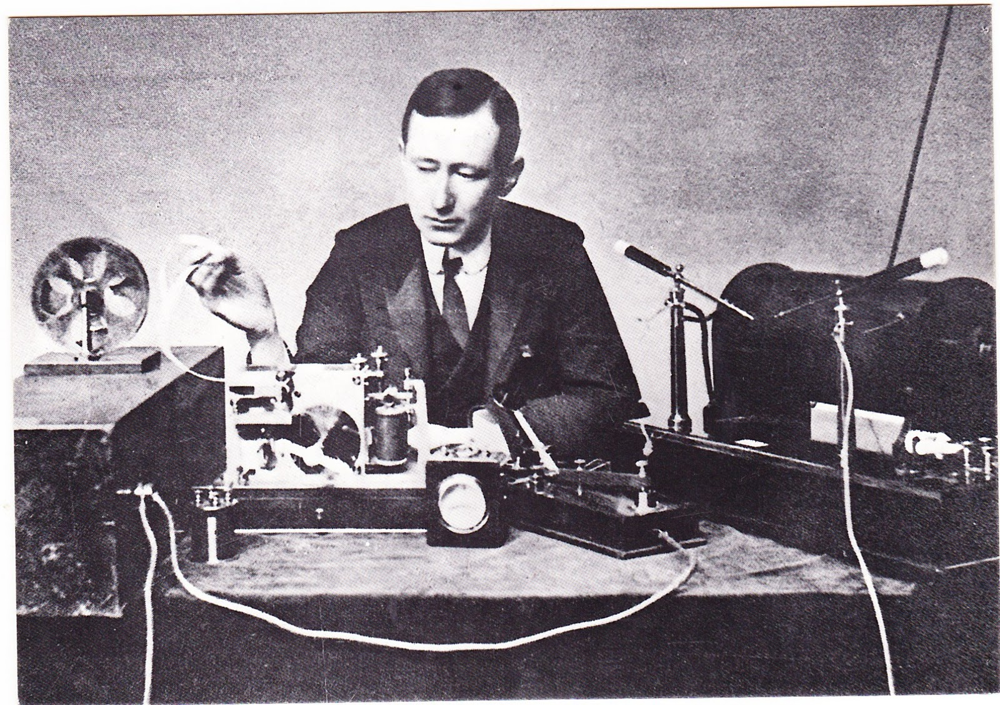
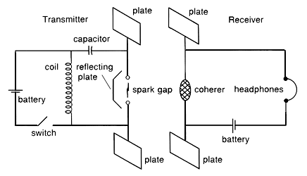
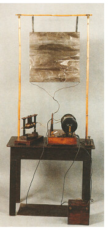
Shannons theory made it possible to quantify information.
This is one of the big factors that led to the digital revolution.
Early digital communications piggy backed on existing telephone and telegraph infrastructure
It also allowed the compression of data into discrete packets that can be sent over the network.
First came circuit switching which automated the switch board.
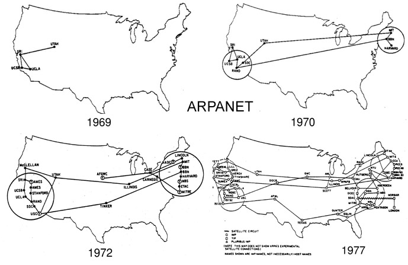
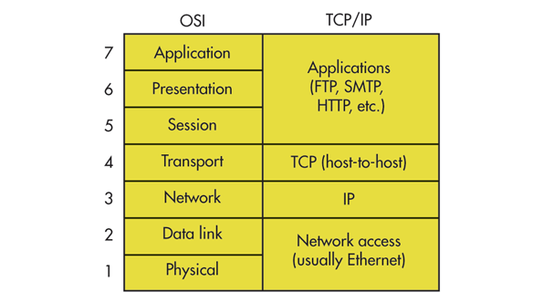
60 03 08 93 6B BA E8 DE 27 C4 07 23 08 00 45 00 01 2D 2D 67 40 00 37 06 CA 3F 4A D9 3F 3D C0 A8
00 66 00 50 F4 48 C1 C3 AA FF D2 D0 CE EF 50 19 00 A0 5D 87 00 00 48 54 54 50 2F 31 2E 31 20 32
30 30 20 4F 4B 0D 0A 43 6F 6E 6E 65 63 74 69 6F 6E 3A 20 63 6C 6F 73 65 0D 0A 43 6F 6E 74 65 6E
74 2D 54 79 70 65 3A 20 69 6D 61 67 65 2F 67 69 66 0D 0A 43 61 63 68 65 2D 43 6F 6E 74 72 6F 6C
3A 20 70 72 69 76 61 74 65 2C 20 6E 6F 2D 74 72 61 6E 73 66 6F 72 6D 2C 20 6D 61 78 2D 61 67 65
3D 36 30 34 38 30 30 0D 0A 45 78 70 69 72 65 73 3A 20 53 61 74 2C 20 30 34 20 41 70 72 20 32 30
31 35 20 32 31 3A 33 36 3A 33 32 20 47 4D 54 0D 0A 43 6F 6E 74 65 6E 74 2D 4C 65 6E 67 74 68 3A
20 33 35 0D 0A 44 61 74 65 3A 20 53 61 74 2C 20 32 38 20 4D 61 72 20 32 30 31 35 20 32 31 3A 33
36 3A 33 32 20 47 4D 54 0D 0A 53 65 72 76 65 72 3A 20 51 53 0D 0A 0D 0A 47 49 46 38 39 61 01 00
01 00 00 00 00 2C 00 00 00 00 01 00 01 00 80 FF FF FF 00 00 00 02 02 44 01 00 3B
60 03 08 93 6B BA E8 DE 27 C4 07 23 08 00 45 00 01 2D 2D 67 40 00 37 06 CA 3F 4A D9 3F 3D C0 A8
00 66 00 50 F4 48 C1 C3 AA FF D2 D0 CE EF 50 19 00 A0 5D 87 00 00 48 54 54 50 2F 31 2E 31 20 32
30 30 20 4F 4B 0D 0A 43 6F 6E 6E 65 63 74 69 6F 6E 3A 20 63 6C 6F 73 65 0D 0A 43 6F 6E 74 65 6E
74 2D 54 79 70 65 3A 20 69 6D 61 67 65 2F 67 69 66 0D 0A 43 61 63 68 65 2D 43 6F 6E 74 72 6F 6C
3A 20 70 72 69 76 61 74 65 2C 20 6E 6F 2D 74 72 61 6E 73 66 6F 72 6D 2C 20 6D 61 78 2D 61 67 65
3D 36 30 34 38 30 30 0D 0A 45 78 70 69 72 65 73 3A 20 53 61 74 2C 20 30 34 20 41 70 72 20 32 30
31 35 20 32 31 3A 33 36 3A 33 32 20 47 4D 54 0D 0A 43 6F 6E 74 65 6E 74 2D 4C 65 6E 67 74 68 3A
20 33 35 0D 0A 44 61 74 65 3A 20 53 61 74 2C 20 32 38 20 4D 61 72 20 32 30 31 35 20 32 31 3A 33
36 3A 33 32 20 47 4D 54 0D 0A 53 65 72 76 65 72 3A 20 51 53 0D 0A 0D 0A 47 49 46 38 39 61 01 00
01 00 00 00 00 2C 00 00 00 00 01 00 01 00 80 FF FF FF 00 00 00 02 02 44 01 00 3B
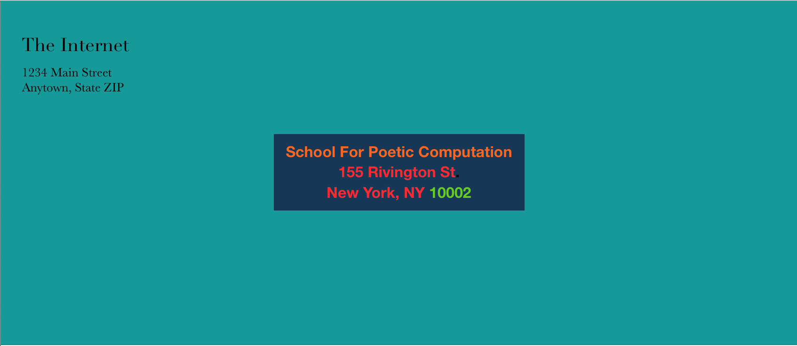
HTTP/1.1 200 OK
Connection: close
Content-Type: image/gif
Cache-Control: private, no-transform, max-age=604800
Expires: Sat, 04 Apr 2015 21:36:32 GMT
Content-Length: 35
Date: Sat, 28 Mar 2015 21:36:32 GMT
Server: QS
Demo
Going on a scavenger hunt
for infrastructures
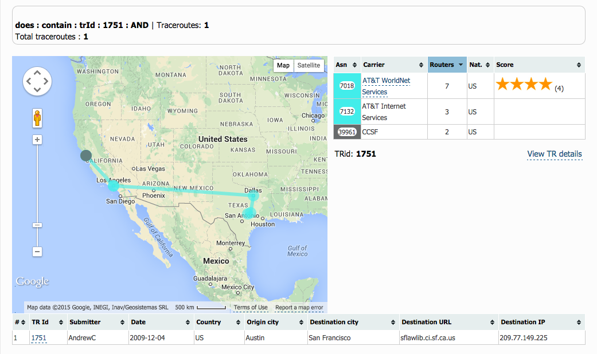
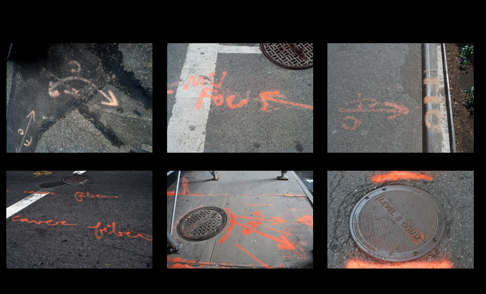
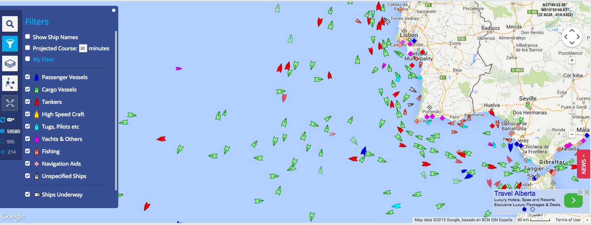
You can do any of these suggestions
You can do something else
You can work in groups
Requirements
has geographic coordinates
geodata formats
exif data
shapefile
kml
geojson
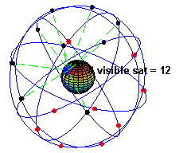
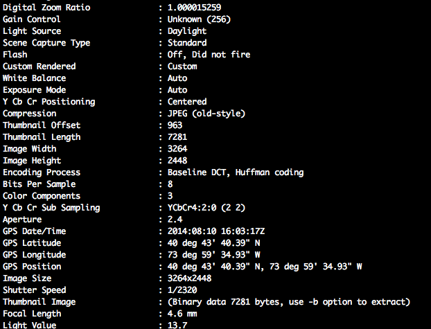
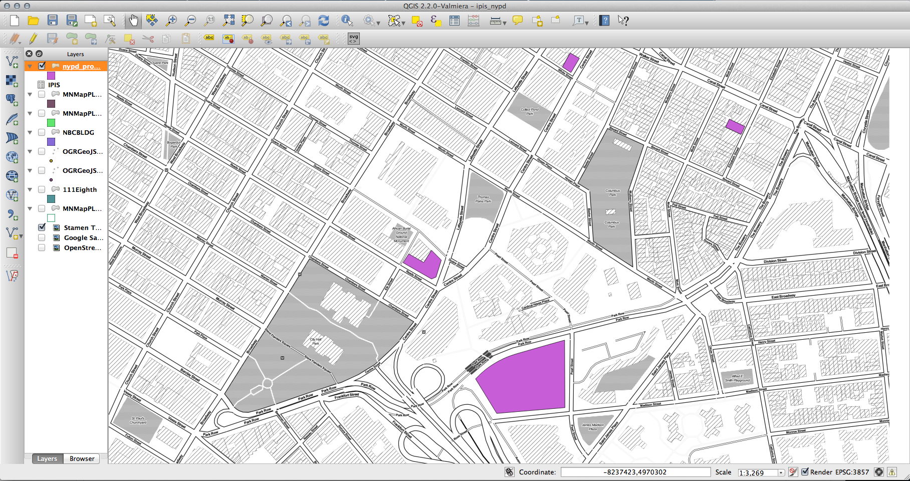
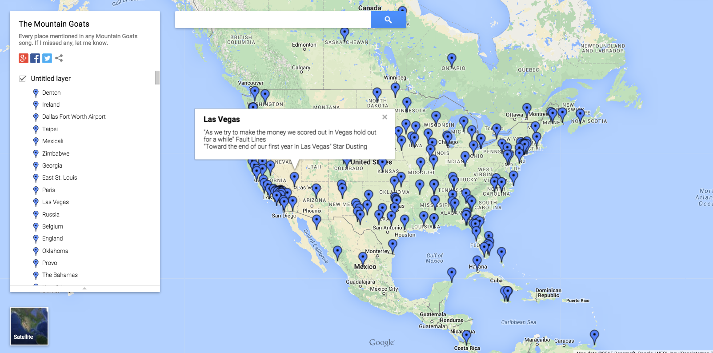
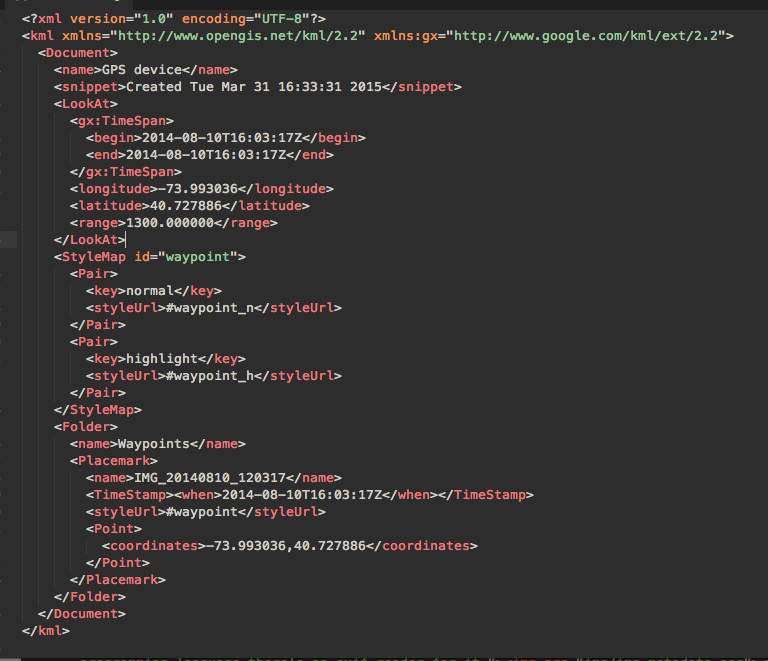
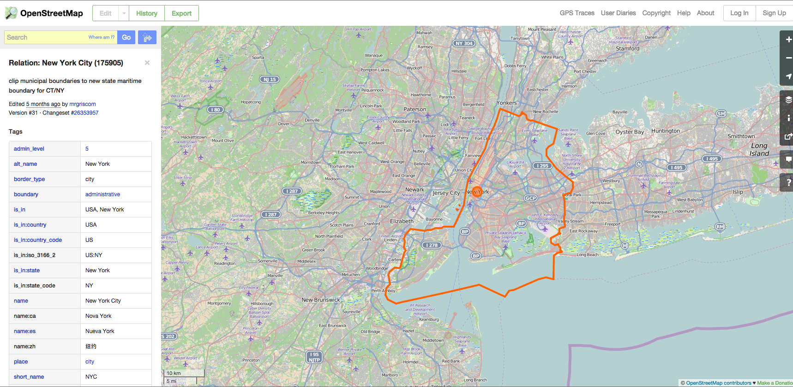
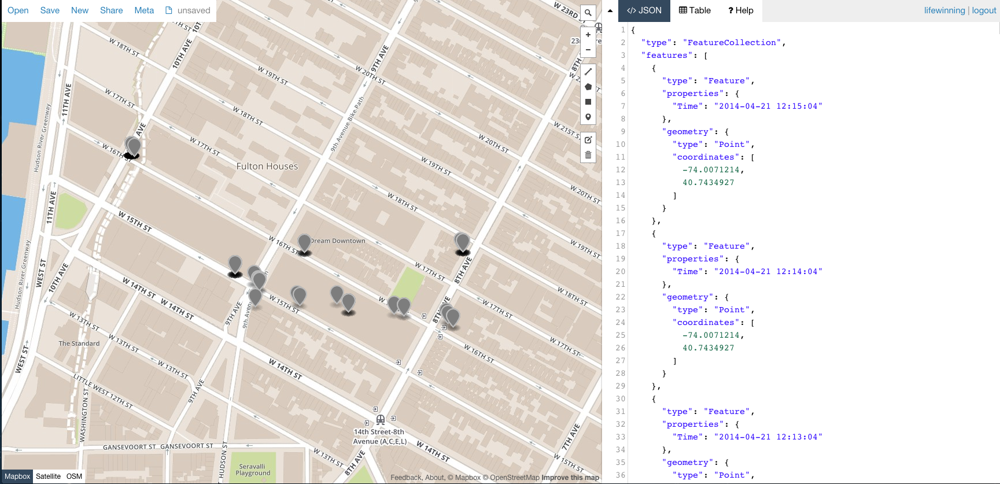
Submitting Your Work:
April 15
be prepared to show and tell